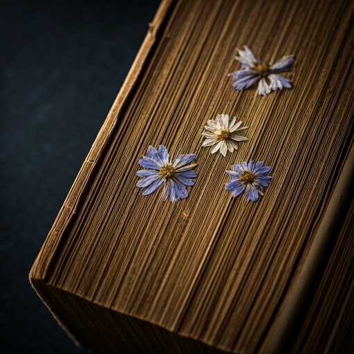
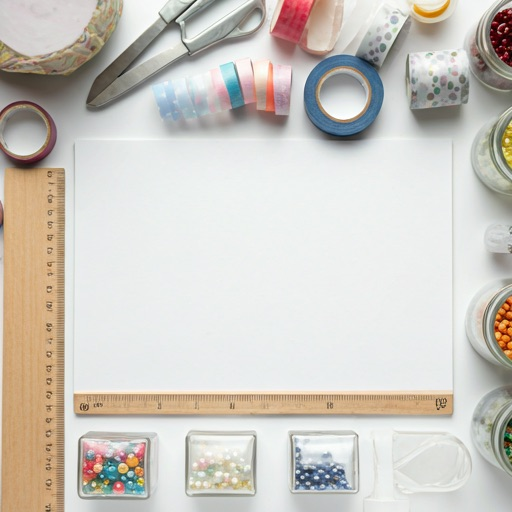
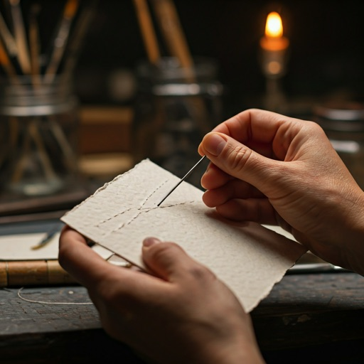

Artisanal Memories
A digital sanctuary for the tactile, the torn, and the treasured. Welcome to a corner of the web where bits and pieces become beautiful stories.
Memories
Summer Solstice, 1994
"The smell of old paper and dried lavender always brings back the workshop on Rue de Rivoli..."
— Fragment 012
Mixed Media
TEXTURE_01
Linen weave, 300gsm, Ivory.
Exploring the intersection of sound and sight. Hand-torn music sheets from the 1920s.
architecture
Curated Chaos
The beauty of the digital scrapbook lies in the intentional layering of disparate elements—finding harmony in the fray.
Craft Corner
content_cut
Precision Cut

brush
Ink & Dye

Join the Collective
Receive weekly prompts, digital textures, and stories from our community of creators.
auto_stories
edit_note